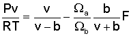
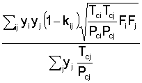
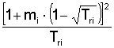
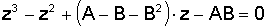
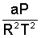
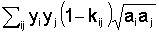
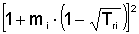
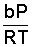
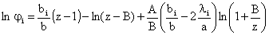
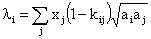

Equazioni RKS
Equazione di stato

dove: v = volume molare della fase
b = Sjyjbj
bj = Wb×R×Tcj / Pcj
Wa = [9(21/3-1)]-1 = 0,4274802327
Wb = (21/3-1)/3 = 0,086640350
Tcj , Pcj temperatura e pressione critica del componente j
F = 
kijj = parametro di interazione (vedi)
Fi = 
mi = 
wi = fattore acentrico del componente i (vedi)
Tri = temperatura ridotta: T/Tci
Equazione di stato in termini di fattore di comprimibilità
Al fine di risolvere l’equazione di stato nell’incognita v è preferibile riscriverla sotto la forma seguente:

dove: A = 
a = 
ai = aciai
aci =WaR2Tci2/Pci
ai = 
B = 
Questa equazione viene risolta dalla subroutine SOLUZ.
Equazioni di equilibrio
L’equilibrio di un componente tra la fase liquida e la fase vapore è espresso dall’uguaglianza delle fugacità. I coefficienti di fugacità sono calcolati dall’equazione seguente [6]:

dove: 
e dove tutti gli altri simboli sono stati definiti sopra.